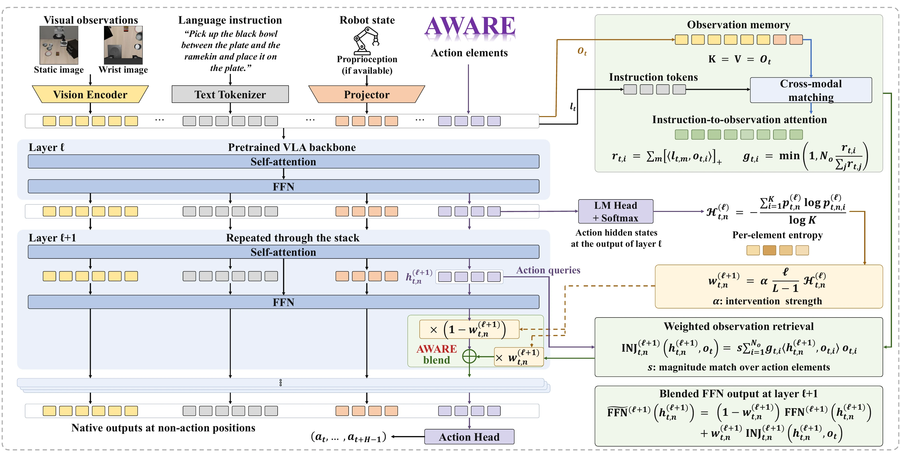

01Overview
Re-read the observation where the action is still undecided
TL;DR
Abstract
02Diagnosis
Grounding fades with depth, and far actions settle last
(a) Observation share of the action representation
(b) Action Entropy across the chunk
Show
03Method
The model's own FFN as a memory of the observation

One forward pass with AWARE
# once per policy call
O = obs_tokens(obs) # keys = values = O
g = instr_weight(instr, O) # Eq. (g)
for l in range(L - 1):
H = entropy(lm_head(h_act[l])) # per element
w = alpha * l / (L - 1) * H # Eq. (w)
q = ffn_in(h_act[l + 1]) # own query
inj = s * O.T @ (g * (O @ q)) # Eq. (9)
out[l + 1] = (1 - w) * out[l + 1] + w * inj
# non-action tokens keep their native FFN output- Training-free
- Plug-and-play
- No extra sensors or modules
- One strength α
Where the entropy is read, per backbone family
Where AWARE writes, element by element
04Results
Seven backbones, largest gains on long horizons
Base → w/ AWARE, per suiteEach segment runs from the base policy to the same checkpoint with AWARE; hover for the numbers and the strength α.
Table I
Gain by suiteΔ = w/ AWARE − Base, success points; Long is where the gain is largest for every backbone.
Strength α used in Table I
Google Robot · CogACT
WidowX · SpatialVLA
Success by chain length
Table III
Where the gain is small or reversed
05Analysis
The gain comes from routing real evidence
Component analysisAverage success over the four LIBERO suites when one part of the rule is removed; hover a bar for each suite.
Table IV
Diagnostic variants on LIBERO-LongGain over the base policy when the entropy routing or the injected content is replaced.
Table V
Sensitivity to the strength α
Backbone
Inference overheadOpenVLA-OFT on LIBERO-Long, one NVIDIA A100 GPU; the policy predicts chunks of H = 8, so the per-step latency is the wait per environment step.
Table VI
06Rollouts
Base vs. w/ AWARE, side by side
07Citation
BibTeX
@article{yang2026aware,
title = {AWARE: Action-Entropy-Weighted and Attention-Guided Retrieval of Observation Evidence for Vision-Language-Action Models},
author = {Yang, Jiabing and Chen, Yixiang and Xu, Yuan and Li, Peiyan and Wen, Zichen and Fang, Bowen and Cui, Chenhang and Yu, Tao and Ma, Qisen and Wang, Kai and He, Ziheng and Ye, Wen and Wu, Xiangnan and Li, Yingda and Huang, Yan and Wang, Liang},
journal = {arXiv preprint arXiv:2602.18020},
year = {2026}
}